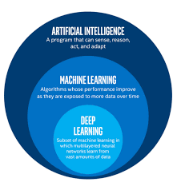
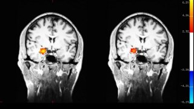

How AI has helped the health sector in showing the benefits of ancient yoga, meditation, and exercise in today's world?
How AI works?
Artificial Intelligence is a field of computer science that deals with the intelligence manifested by machines. AI solves complex problems and takes decisions by statistically analyzing data.AI(especially a subset of AI called Machine Learning/ML) can be used to classify things and make decisions accordingly through a program called classifier. For eg., there is a classifier to detect different asanas of yoga - It will first be given labeled data, which will be a set of photos of asanas labeled with the type. Then based on the graph of asanas and the name of asanas, the program will try to create an algorithmic formula. Then it will be training data to train the model and improve its classification. Then finally it will be given some test data to test whether it's working properly or not. (Note that this can be also done using deep learning and posture recognition but in this example we have used machine learning.)Deep Learning (a subset of ML) works similarly to how our brain works. Deep Learning works by sending information through hundreds of thousands of computational neurons (which are like the thousands of neurons present in our brain), so that a relationship can be found between the variables and a decision can be taken. It is also called a neural network and consists of an input layer that is composed of artificial input neurons, and brings the initial data into the system for further processing by subsequent layers of artificial neurons called the hidden layers. The output layer is the last layer of neurons that produces given outputs for the program.
How clinical trials/studies are conducted using AI?
Let's take an example for understanding how clinical studies are conducted - A study conducted to see whether yoga improves heart health.
A hypothesis is set based on which the study will be conducted, like - Yoga improves heart health.
Then certain categories are set based on which the clinical trial or study is to be conducted, like – male and female, or different age groups.
Blood pressure, blood cholesterol and blood glucose levels, as well as heart rate, is monitored after and before doing yoga on the different categories set.
There is no need for collecting lots of data as with lesser amounts of data also, the AI programs can identify patterns and predict whether the hypothesis is correct or not.
The data is processed by pre-trained AI models.
A study on how meditation helps in curing stress, anxiety, etc. and can be used as a cognitive therapy, by Harvard University.
A study conducted by Harvard University shows that meditation can help in curing stress, anxiety, depression, chronic pain, and much more. Meditation can also be used as a cognitive therapy. This is how the study was performed -Functional magnetic resonance imaging (fMRI), which not only takes pictures of the brain, as a regular MRI does, but also records brain activity occurring, during the scan was used to take before and after scans of subjects who did a 2-month meditation course. The subjects were scanned not only when they were meditating but also when they were performing everyday tasks. It was noticed that after learning meditation the amygdala, a part of the brain that controls emotions, was found to be activated less. This decreases stress, anxiety, and depression.This study was only possible because of AI which was used in fMRI that was used to scan the subjects and also in most of the data collecting and processing.